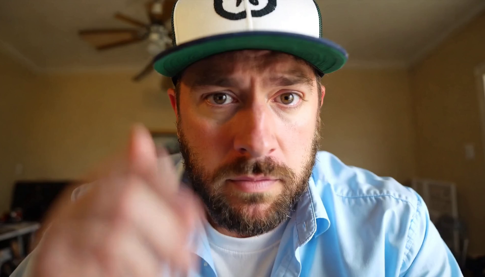

5s video · E2E
8.586s
min 8.557 · max 8.624
Two-stage image-to-video validation for vLLM-Omni PR #6540: MiniMax H3 Super produces the draft on GPU 2, then LTX-2.5 refines and encodes the final video with audio on GPU 3.
Means below use the three post-warmup runs at concurrency 1. Request latency spans Omni.generate through receipt of the complete encoded MP4; startup, file writes, and validation are excluded.
Warmup rows are shown for reproducibility but excluded from the means. The first request for each shape may include lazy compilation.
| Run | Stage 0 | Stage 1 | Residual | E2E wall | Frames | Decode |
|---|---|---|---|---|---|---|
| 05s-warmup-0warmup | 13.267s | 3.363s | 0.191s | 16.822s | 121 | Passed |
| 05s-measured-1 | 4.954s | 3.415s | 0.189s | 8.557s | 121 | Passed |
| 05s-measured-2 | 5.045s | 3.390s | 0.189s | 8.624s | 121 | Passed |
| 05s-measured-3 | 4.996s | 3.404s | 0.176s | 8.576s | 121 | Passed |
| 10s-warmup-0warmup | 10.921s | 19.315s | 0.375s | 30.611s | 241 | Passed |
| 10s-measured-1 | 10.786s | 6.949s | 0.354s | 18.089s | 241 | Passed |
| 10s-measured-2 | 10.811s | 6.964s | 0.351s | 18.125s | 241 | Passed |
| 10s-measured-3 | 10.853s | 7.063s | 0.350s | 18.267s | 241 | Passed |
Eight original MP4 outputs, including warmups. Every file was independently checked with ffprobe and fully decoded by ffmpeg.
Machine-readable artifacts are published alongside the rendered evidence so the headline numbers can be audited.

A medium close-up of a bearded man in a green-and-white baseball cap, looking at camera and speaking: “I think it’s so good … This got to be, it’s got to be the best tool I’ve ever seen.” The full prompt is preserved in metadata.json.